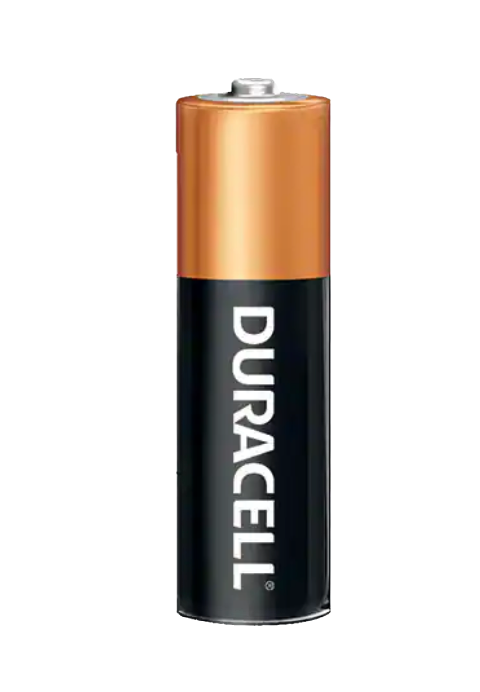
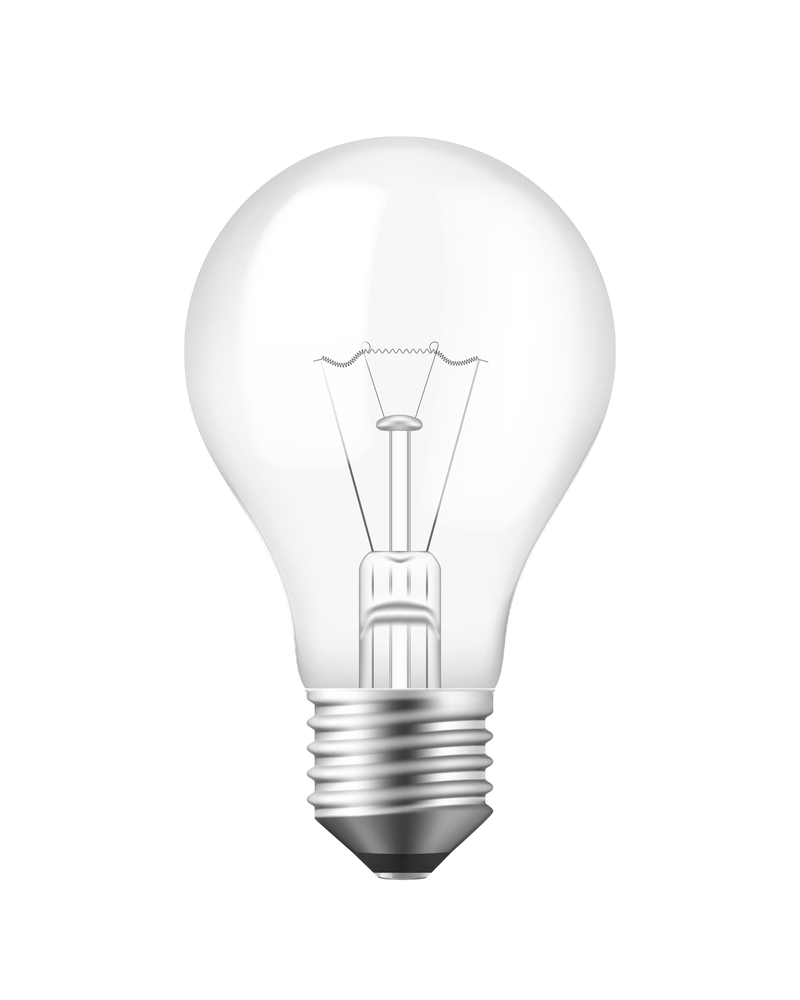

SPECIAL CASES
These items are considered "special cases" in recycling. If you find yourself throwing out any one of these items, learn how to recycle it correctly.

Recycling Batteries:
- Do not place in trash or recycle bins
- Please call 1-800-RECYCLE (1-800-732-9253) or email 1800recycle@ecy.wa.gov to find your nearest recycling-drop off location
- Link

Lightbulbs:
- Do not place in trash or recycle bins
- Not all locations will accept all types of light bulbs
- If the light bulb is broken and in pieces. Please place it in a plastic bag before you recycle
- Please visit Link for more details and information
Medications:
- Medications should never be flushed down the toilet or thrown in trash
- Medications should be brought to a secure medicine return site
- To obtain a mail-back supply for safe medication returns, please call (844) 482-5322
- Please visit Link to find locations that can help you properly dispose your unwanted medications
Electronics:
- E-Waste
- Electronics contain valuable materials that can be recycled but also harmful substances
- Many cities have e-waste collection events or facilities. IN Seattle, find locations to recycle the following electronics via the Take It Back Network
- Requests can be submitted online at Link or you can call SPU Customer Service at (206) 684-3000 to schedule a special item pick up
Paints and Solvents:
- Paints should never be disposed of down the drain because they can contaminate the water supply and the environment
- Many cities offer special collection events for household hazardous waste
- Dry latex, water-based, or acrylic paint can go in the trash. Follow these steps to get rid of it safely:
- If there is less than an inch of paint in the can, remove the lid and air dry
- If there is more than an inch of paint in the can, mix the paint with cat litter and let it solidify. Or use a paint hardener according to directions
- Separate and throw the can of dried paint and lid in the garbage. Do not take the paint out of the can.
- Empty paint cans cannot be cleaned enough to recycle and should go in the garbage
- Paint brushes with dried paint can go into the garbage